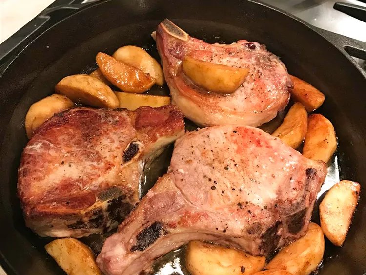

Caramel Apple Pork Chops Recipe

Pork chops and apples are spiced with cinnamon and nutmeg in this sweet and savory fall recipe. It's a guaranteed favorite for kids. Serve with smashed potatoes and buttered green beans.
Ingredients:
- 4 (3/4 inch) thick pork chops
- 1 teaspoon vegetable oil
- 2 tablespoons brown sugar
- ⅛ teaspoon ground cinnamon
- ⅛ teaspoon ground nutmeg
- salt and pepper to taste
- 2 tablespoons unsalted butter
- 2 medium tart apples - peeled, cored and sliced
- 3 tablespoons pecans (Optional)
Directions:
- Place a medium baking dish into the oven and preheat to 175 degrees F (80 degrees C).
- Heat a large skillet over medium-high heat. Brush chops lightly with oil and place into the hot pan. Cook until no longer pink in the center, 5 to 6 minutes per side. An instant-read thermometer inserted into the center should read 145 degrees F (63 degrees C). Transfer to the baking dish in the preheated oven to keep warm.
- Stir brown sugar, cinnamon, nutmeg, salt, and pepper together in a small bowl.
- Melt butter in a skillet over medium-low heat. Stir in apples and brown sugar mixture. Cover and cook until apples are just tender, about 5 minutes. Leaving the sauce in the skillet, remove apples with a slotted spoon and arrange over pork chops; keep warm in the oven.
- Continue to cook sauce, uncovered, until thickened slightly, 2 to 3 minutes.
- Remove pork chops from the oven. Spoon sauce over top and sprinkle with pecans.
Go back